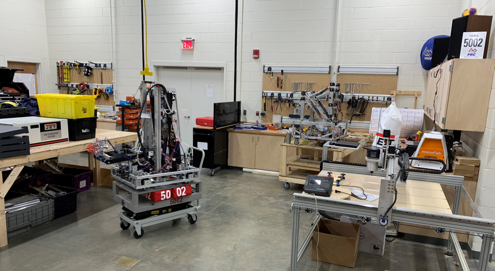

COMPUTER SCIENCE FOUNDATIONS is intended to provide students with exposure to various information technology occupations and pathways. As a result, students will complete all core standards, as well as standards in two focus areas. Proficient students will be able to describe various information technology (IT) occupations and professional organizations. They will be able to demonstrate logical thought processes and discuss the social, legal, and ethical issues encountered in the IT profession.
ADVANCED PLACEMENT COMPUTER SCIENCE PRINCIPLES offers a multidisciplinary approach to teaching the underlying principles of computation. The course will introduce students to the creative aspects of programming, abstractions, algorithms, large data sets, the Internet, cybersecurity concerns, and computing impacts. AP Computer Science Principles will give students the opportunity to use technology to address real-world problems and build relevant solutions. Due to the amount of writing required in this course, it is recommended that students are also enrolled in Honors or AP English. Students will pay for and participate in the College Board AP testing program.
WELDING DUAL ENROLLMENT The goal of this course is to gain knowledge of fundamental safety practices for the welding/cutting industries, cutting theory, and practices of Oxy-Fuel and handheld Plasma-Arc cutting. This is accomplished through related bookwork, hands-on instruction and work-based competencies. Students are introduced to Shielded Metal Arc Welding related theory and practices for the joining and padding of carbon steel plate. Students will need high top leather boots and a cotton welding cap (cotton baseball cap will work).
WELDING II DUAL ENROLLMENT This course is the continuation of Shielded Metal Arc Welding related theory and practices for the joining of carbon steel plate and the addition of carbon steel pipe. Fillet and groove welds are performed using various electrodes, and carbon steel pipe welds are performed. This program is American Welding Society certified. Students will be working towards the first 432 hours with TCAT and their first certification, AWS Certified Welder. Cost of this certification assessment is $50 but is not a required assessment. The AWS certification is a Ready Graduate indicator.
WELDING II DUAL ENROLLMENT This course is the continuation of Shielded Metal Arc Welding related theory and practices for the joining of carbon steel plate and the addition of carbon steel pipe. Fillet and groove welds are performed using various electrodes, and carbon steel pipe welds are performed. This program is American Welding Society certified. Students will be working towards the first 432 hours with TCAT and their first certification, AWS Certified Welder. Cost of this certification assessment is $50 but is not a required assessment. The AWS certification is a Ready Graduate indicator.
STEM I: FOUNDATION – HONORS is a foundational course in the STEM cluster for students interested in learning more about careers in science, technology, engineering, and mathematics. This course covers basic skills required for STEM fields of study. Upon completion of this course, proficient students are able to identify and explain the steps in both the engineering design and the scientific inquiry processes. Students conduct research to develop meaningful questions, define simple problem scenarios and scientific investigations, develop fundamental design solutions, conduct basic mathematical modeling and data analysis, and effectively communicate solutions and scientific explanations to others. Participation in local, regional, state, or national competitions provide enrichment for the honors level. There is a $50 lab and materials fee.
STEM III: STEM in CONTEXT is an applied course in the STEM career cluster which allows students to work in groups to solve a problem or answer a scientific question drawn from real-world scenarios within their schools or communities. This course builds on STEM I and II by applying scientific and engineering knowledge and skills to a team project. Proficient students will be able to effectively use skills such as project management, team communication, leadership, and decision making. They will also be able to effectively transfer the teamwork skills from the classroom to a work setting. Participation in local, regional, state, or national competitions provide enrichment for the honors level. There is a $50 lab and materials fee.
STEM IV: STEM PRACTICUM is a capstone course intended to provide students with the opportunity to apply the skills and knowledge learned in previous STEM Education courses within a professional, working environment. In addition to developing an understanding of the profession and ethical issues encountered by STEM professionals in the workplace, students learn to refine their skills in problem solving, research, communication, data analysis, teamwork, and project management. Instruction may be delivered through school laboratory training or through work-based learning arrangements such as internships, cooperative education, service learning, mentoring, and job shadowing. Calculus is a recommended pre/co-requisite course. There is a $50 lab and materials fee.
ADVANCED MANUFACTURING is a stand-alone course that introduces students to the facets of modern manufacturing production. Students will work in a lab setting and have the opportunity to assess online to receive the Certified Production Technician (CPT). There are 4 subtests for the CPT; Safety, Quality Practices & Measurements, Manufacturing Processes & Production, and Maintenance Awareness. Each subtest is $23 and the CPT is a Ready Graduate indicator.
This website was built with Bootstrap 4.3.1.